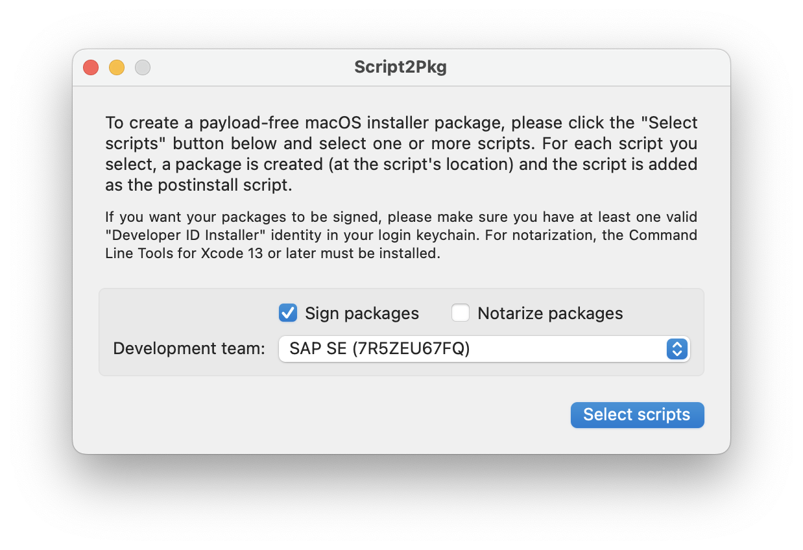
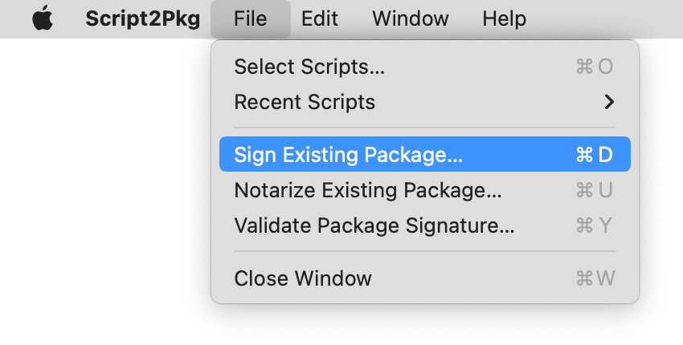
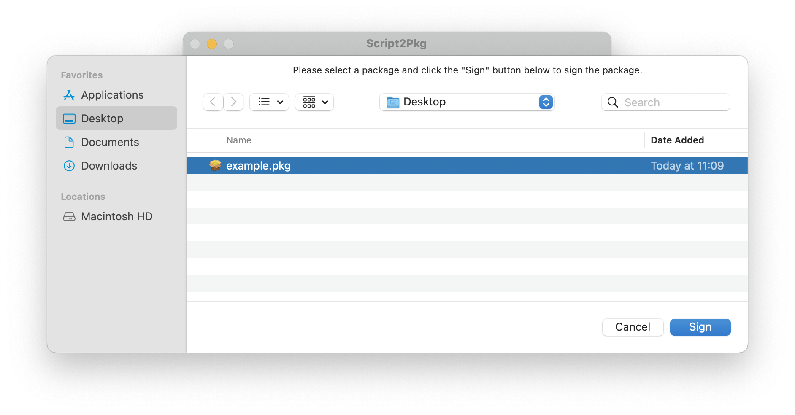
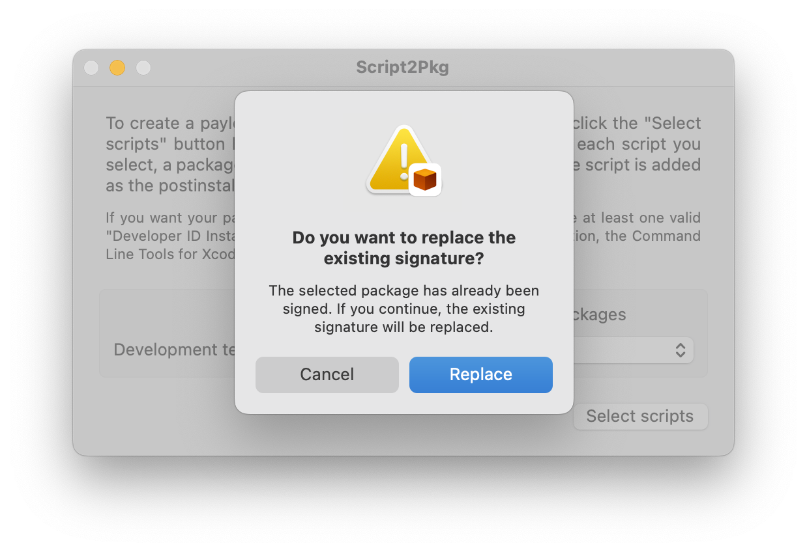
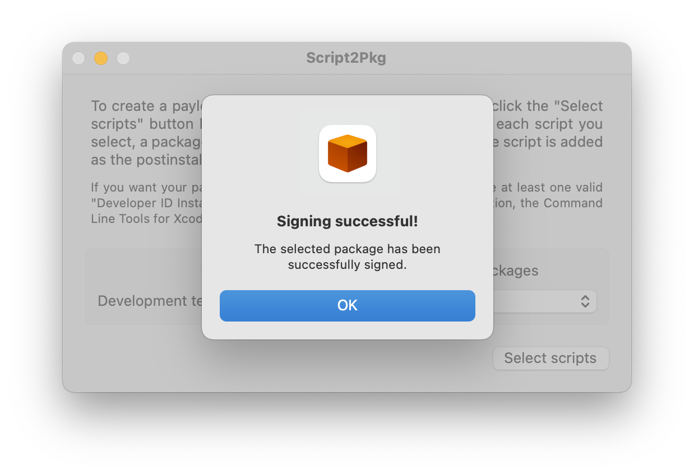

Script2Pkg
Script2Pkg
Script2Pkg
Signing existing packages
The app is able to sign existing packages. This allows you to sign an existing package that not has been signed or to resign a package with an expired signature. Once you have an installer package you want to sign, please use the procedure below:
1. Launch the app.
2. Make sure the Sign packages option is selected.

3. Under the File menu, choose Sign Existing Package…

4. Select the package you want to sign and click the Sign button.

5. If the package is already signed, the app asks you if the existing signature should be replaced. Click the Replace button to continue.

6. The app will report back if signing was successful.
